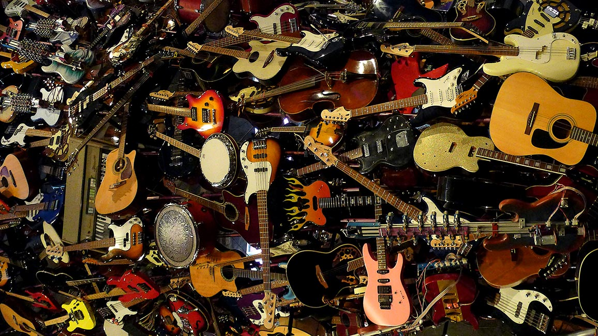
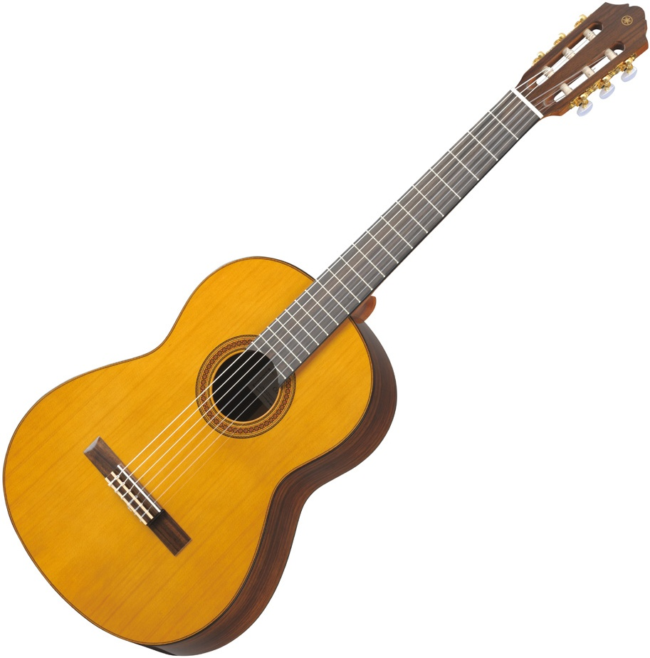
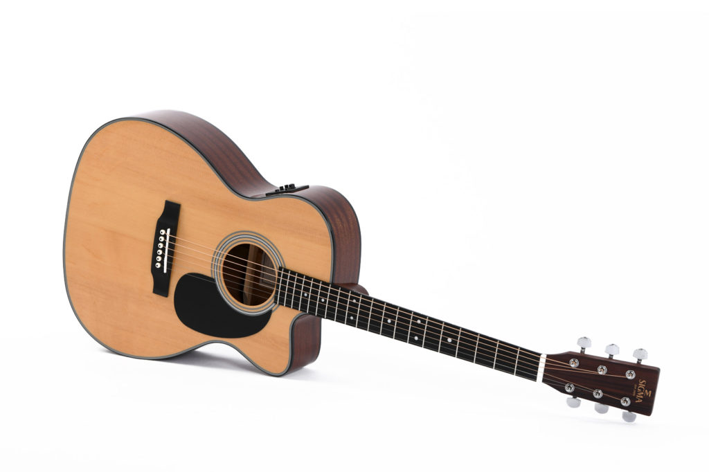

Любим гитары Классическая гитара Классическая гитара – это музыкальный инструмент щипкового типа с шестью струнами. Она наделена многообразием тембра и возможностями художественного исполнения. По праву считается одним из наиболее распространенных музыкальных инструментов. В отличии от акустической гитары у классической струны нейлоновые. Нейлоновые струны Это нейлоновая леска, имеющая обмотку из меди, серебра или латуни. Предназначение нейлоновых струн – это установка на классическую гитару или электроакустическую гитару. Есть несколько видов натяжения: нормальное, сильное и очень сильное. Акустическая гитара. Струнный щипковый музыкальный инструмент с металическими струнами. Железные струны Железные струны – это изделия, напоминающие проволоку в виде гибкого отрезка, находящегося в натянутом положении. Они могут иметь цельную конструкцию, а могут состоять из отдельных частей – специального сердечника (проволоки из стали) и оплетки. Гитарные струны из металла, как правило, в процессе производства покрываются специальными защитными веществами, которые позволяют значительно продлить срок их службы. В чем разница между железными и нейлоновыми струнами. Нейлоновые струны более мягкие и пальцам легче их зажимать. Имеют пластмассовый и глухой звук. Учиться на них проще, чем на металле. Металлические струны более жесткие и тонкие, имеют более яркое звучание. | |